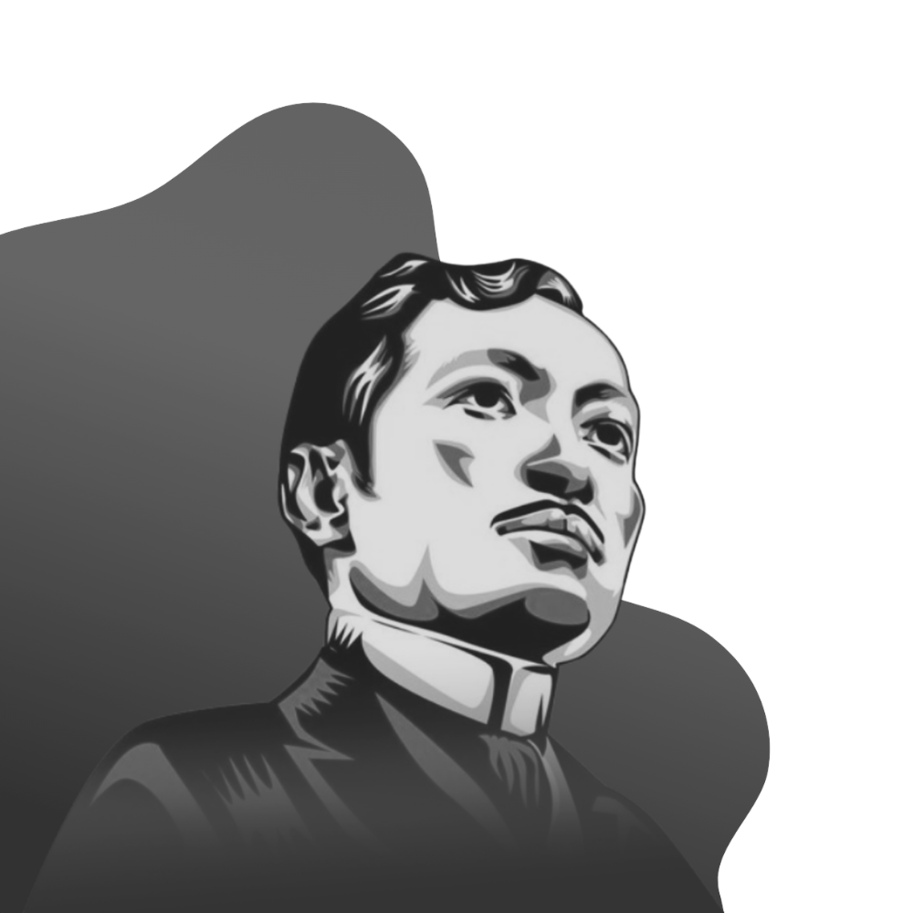

Ang Noli Me Tangere
Ang Noli Me Tangere ay isang rebolusyonaryong nobela na isinulat ni José Rizal noong 1887.
Ito ay isang matinding kritisismo sa pamumuno ng mga Kastila sa Pilipinas, na naglalantad ng mga hindi pagkakapantay-pantay sa lipunan,
katiwalian, at pang-aapi na dinanas ng mga Filipino sa ilalim ng mga paring Kastila at mga opisyal ng gobyerno.
Ang nobela ay sumusunod sa kwento ni Crisostomo Ibarra, isang batang Filipino na may mataas na pangarap,
na bumalik sa Pilipinas pagkatapos mag-aral sa Europa. Nais niyang magdala ng progreso sa kanyang bayan,
ngunit agad niyang natuklasan ang malalim na katiwalian sa lipunan. Habang nakakaranas siya ng pagtataksil, kalungkutan, at panganib,
dahan-dahan niyang napagtanto na hindi madali ang pagbabago.
Sa pamamagitan ng mga makulay na karakter, inilalarawan ng Noli Me Tangere ang buhay sa Pilipinas sa ilalim ng pamumuno ng mga Kastila,
na itinatampok ang mga tema ng pag-ibig, paghihiganti, pang-aapi, at ang laban para sa katarungan.
Ang nobela ay may mahalagang papel sa paggising ng nasyonalismong Filipino at pag-inspirasyon sa Rebolusyong Pilipino.
Ang May Akda
Si Jose Rizal ay isang Pilipinong nasyonalista, manunulat, at rebolusyonaryo na kinikilala bilang pambansang bayani ng Pilipinas.
Sa pamamagitan ng kanyang mga akda, partikular ang Noli Me Tangere at El Filibusterismo, matapang niyang isiniwalat
ang pang-aabuso at katiwalian ng mga kolonyalistang Espanyol at ng simbahan.
Sa halip na sa dahas, naniniwala si Rizal na ang kaalaman at edukasyon ang tunay na sandata sa paghingi ng pagbabago at kalayaan
para sa mga Pilipino. Sa kanyang mga sulatin, binigyang-diin niya ang karapatan ng mga Pilipino sa pantay na pagtrato at
makatarungang pamamahala.
Malaki ang naging epekto ng kanyang mga akda sa pagkamulat ng damdaming makabayan ng mga Pilipino, na nagbigay-daan sa Rebolusyong Pilipino.
Sa kabila ng kanyang mapayapang paninindigan, hinatulan siya ng kamatayan at binaril sa Bagumbayan noong Disyembre 30, 1896.
Ang kanyang buhay, paninindigan, at sakripisyo ay nagsilbing inspirasyon sa mga sumunod na henerasyon ng mga Pilipino na patuloy na
nagtataguyod ng kalayaan, katarungan, at pagmamahal sa bayan.
